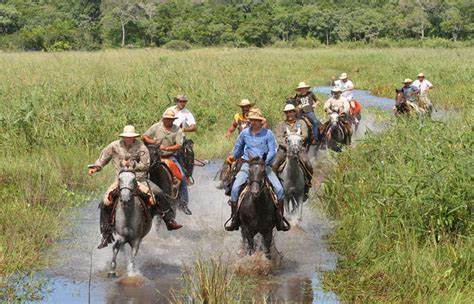
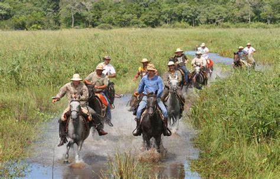

Extensão territorial
O bioma Pantanal é considerado uma das maiores extensões úmidas contínuas do planeta. Este bioma continental é considerado o de menor extensão territorial no Brasil, entretanto este dado em nada desmerece a exuberante riqueza que o referente bioma abriga. A sua área aproximada é 150.355 km² (IBGE,2004), ocupando assim 1,76% da área total do território brasileiro. Em seu espaço territorial o bioma, que é uma planície aluvial, é influenciado por rios que drenam a bacia do Alto Paraguai.
Arte e cultura
A região do Pantanal no Brasil é um caldeirão cultural, abrigando desde povos indígenas Guarani até descendentes de imigrantes europeus. Essa diversidade criou uma identidade regional vibrante, onde a música, especialmente a moda de viola, festas tradicionais, danças e contação de causos são essenciais.
Costumes: Os pantaneiros, ou peões, são habilidosos em lidar com gado, pesca, caça e canoagem. Apesar da vida solitária, eles se reúnem para festas e cantorias. O pastoreio do gado é adaptado ao ciclo das águas, buscando pastagens secas.
Águas: As planícies pantaneiras ficam inundadas durante boa parte do ano, com rios como o Paraguai e Cuiabá transbordando. Esse fenômeno torna o Pantanal a maior planície inundada do mundo, rica em biodiversidade.
Economia: Baseada na pesca, turismo e pecuária bovina. Barcos-hotéis em Corumbá e Cáceres levam turistas para explorar a fauna e flora. A pesca é proibida durante a piracema (novembro a fevereiro). A pecuária é favorecida pelas áreas planas e úmidas.
Gastronomia: A culinária local inclui pratos como Farofa de Banana-da-Terra e Moqueca de Pintado, utilizando ingredientes frescos do Pantanal.
Música: A moda de viola é popular, especialmente nas comitivas de gado. O berrante é um instrumento cultural importante. Almir Sater, cantor e fazendeiro, destaca a influência de estilos como chamamé e rasqueado na música pantaneira.
 


Apesar de sua exuberância, o Pantanal é impactado pela ação humana, especialmente pela agropecuária nas áreas de planalto adjacentes. O programa PMDBBS indica que, em 2009, o Pantanal manteve 83,07% de sua vegetação nativa.
O Pantanal ainda está se recuperando das queimadas que devastaram 27% da área do bioma. Estima-se que sejam necessárias duas décadas para que toda a flora e a fauna afetadas pelo fogo se recomponham. Entretanto, há risco de que nunca retornem à forma como eram, seja em quantidade ou em diversidade. Após sofrer com o pior episódio de incêndios em décadas, o Pantanal brasileiro está começando a se recuperar com o retorno das chuvas